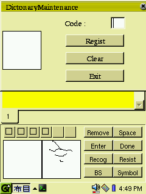

# Created ipk depends on qpf-cyberbit-120-50-t10 # Requires 3.9meg on PDA, plus the 3.5meg for above cyberbit font. Provides: qpe-i18n-ja Description: Nunome. Japanese input method from Axe.  More info available from Sikigami's Nunome page.
If you are short on space, the install script included in the tarball from Sikigami may be a better choice. You have to recreate the library links yourself however:
FLASH=cf_OR_card cd /opt/QtPalmtop/plugins/inputmethods ln -s /mnt/$FLASH/opt/QtPalmtop/plugins/inputmethods/libqNunome.so.1.0.0 libqNunome.so ln -s /mnt/$FLASH/opt/QtPalmtop/plugins/inputmethods/libqNunome.so.1.0.0 libqNunome.so.1 ln -s /mnt/$FLASH/opt/QtPalmtop/plugins/inputmethods/libqNunome.so.1.0.0 libqNunome.so.1.0 ln -s /mnt/$FLASH/opt/QtPalmtop/plugins/inputmethods/libqNunome.so.1.0.0 libqNunome.so.1.0.0Also, make sure you only keep one copy of the cyberbit font. Sikigami puts it in:
/usr/lib/fonts/cyberbit_120_50_t10.qpfinstead of:
/opt/QtPalmtop/lib/fonts/